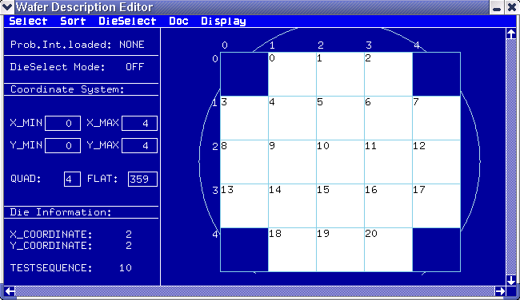

Elements of the Wafer Description Tool
Click on Wafer Descr in the main menu to display the Wafer Description Window.
The figure below shows a typical wafer description window. The right of the screen shows a graphical representation of your wafer, with all valid die shown in black (that is, those die that are part of a stepping pattern). Each die has a coordinate ¡ª the axis of which are shown along the sides of the grid, and a position in the stepping pattern of the prober ¡ª represented by the number in the top left-hand corner of each die (provided the individual die are big enough to display the number). When you select a die (for example, die 10 in the figure below), information on it is shown in the bottom left-hand area of the screen.
